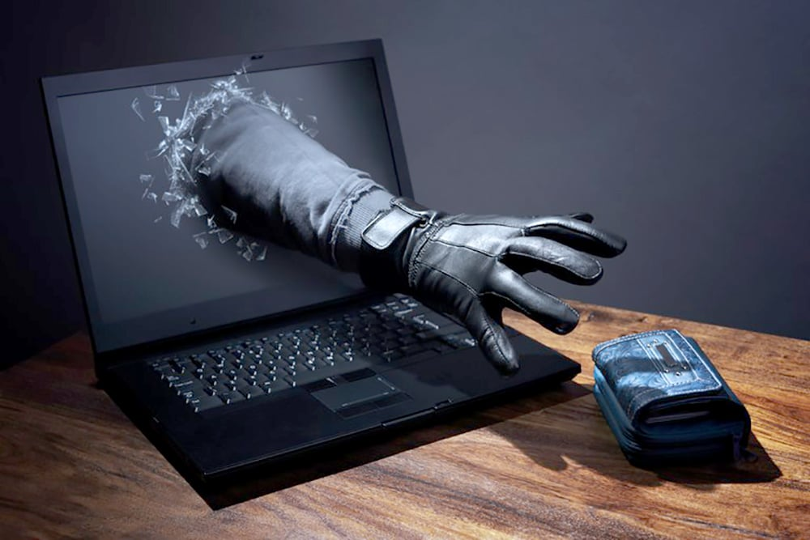
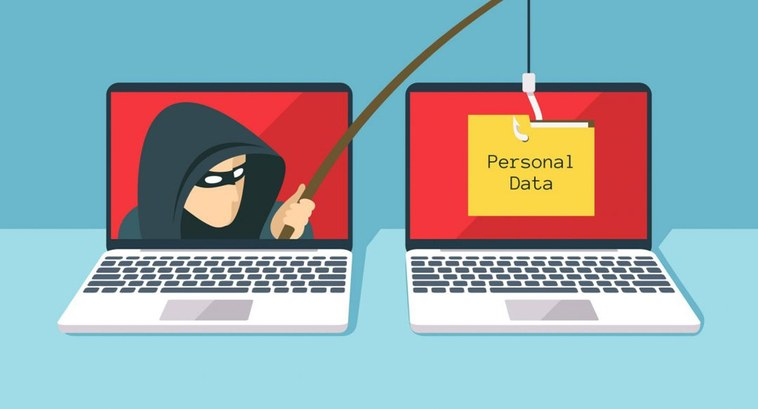

Golpes e Fraudes na Internet - Tipos de golpes e como evitá-los
A aplicação de golpes na internet está se tornando cada vez mais comum, o que exige atenção muito maior com os links e conteúdos online que interagimos diariamente.
Isso porque os cibercriminosos estão sempre buscando novas formas de atacar suas vítimas, e a todo instante surgem métodos para enganar pessoas em busca de vantagens financeiras.
Desde comprovantes de pagamento adulterados até se passar por falsos técnicos, a criatividade dos golpistas vai longe.
Para se prevenir, é preciso entender o que são os golpes da internet, o que fazer se for vítima, os principais crimes aplicados nas redes e como evitar o vazamento de dados.
Confira os seguintes tópicos e fique por dentro do assunto:
1. Phishing
O phishing é um dos golpes da internet mais comuns. Para aplicá-lo, os criminosos enviam e-mails ou mensagens de texto se passando por empresas reais. Nessas mensagens, eles podem pedir para que a pessoa faça o download de um arquivo ou acesse um determinado link.
Quando o usuário faz isso, os criminosos passam a ter acesso ao dispositivo da vítima e podem roubar dados sensíveis, como números de documentos e do cartão de crédito. Outra forma de aplicar o phishing é enviando uma mensagem para o indivíduo, como se fosse uma empresa idônea, solicitando que ele informe alguns dados pessoais e bancários.
Como se proteger:
- Sempre checar os remetentes dos e-mails que você recebe para se certificar de que se trata do endereço oficial de uma determinada pessoa ou empresa;
- Não clicar em links ou baixar arquivos enviados por indivíduos que você não conhece;
- Mesmo que o link ou arquivo venha de uma pessoa que você conhece, principalmente em grupos de WhatsApp, certifique-se de que foi ela mesma que enviou e entenda qual é a origem desse link;
- Desconfie de ofertas que prometem grandes ganhos ou que tragam promoções com valores muito abaixo dos praticados no mercado. Geralmente essas condições são iscas para atrair as pessoas a clicarem no link;
- Não informe seus dados pessoais e bancários por e-mail ou fora de ambientes como o internet banking oficial do seu banco.
2. Pharming

O pharming é a combinação dos termos phishing e farming. Os criminosos que aplicam esse golpe redirecionam os usuários para sites fraudulentos com o objetivo de roubar os dados dessas pessoas.
Muitos desses sites se passam por páginas de empresas reais. Para fazê-los, os criminosos alteram os registros DNS do site falso ou instalam um malware no dispositivo da vítima que redireciona automaticamente para essas páginas.
Como se proteger:
- Todos os cuidados que listamos acima sobre o phishing devem ser observados também para o pharming. Além disso, ao fazer uma compra online, certifique-se de que você realmente está no site oficial da loja – principalmente se tiver recebido algum link com uma oferta por e-mail, WhatsApp ou SMS. Preste atenção no endereço que está no link e em outros pontos como a identidade visual e logo da marca, para ver se são oficiais. Erros de português também indicam que você pode estar em uma página falsa.
3. Vishing
O vishing é um golpe que utiliza a voz para enganar a pessoa. Nesse caso, o bandido entra em contato com a vítima, ou induz ela a ligar para ele por meio de mensagens fraudulentas, para obter dados sensíveis dessa pessoa. Geralmente, o golpista se passa por um representante de uma empresa idônea.
Como se proteger:
- Não informe seus dados pessoais e bancários por telefone;
- Entre em contato com empresas apenas pelos canais de atendimento que constam nos seus sites oficiais. Se você receber um número por algum outro canal, sempre verifique no site se está correto.
4. Smishing

Também conhecido como phishing por SMS, o smishing é um golpe financeiro aplicado por meio de mensagens de textos enviadas para dispositivos móveis. Nesse caso, o golpista se passa por uma pessoa ou uma empresa legítima para aplicar a fraude.
Assim como ocorre no phishing, no smishing os criminosos solicitam que a vítima acesse um determinado link. Ao fazer isso, o usuário possibilita que o golpista tenha acesso ao seu dispositivo e consiga coletar os seus dados.
Em posse dessas informações, o golpista pode vazar dados sensíveis, cometer fraudes de identidade e até roubar diretamente da conta bancária da vítima.
Como se proteger:
- Tome os mesmos cuidados listados no phishing e no pharming.
5. Golpes em redes sociais
Há vários tipos de golpes que podem ser aplicados nas redes sociais. Um dos mais conhecidos é quando o criminoso consegue o acesso à conta de uma pessoa e começa a pedir dinheiro para os seguidores dela ou a vender produtos inexistentes.
Outro golpe comum acontece quando uma pessoa afirma que consegue multiplicar o dinheiro da vítima e pede para que ela envie uma determinada quantia para que ele possa fazer isso. Quando recebe a transferência, o criminoso desaparece.
Entre os principais golpes da internet aplicados nas redes sociais também estão as vendas falsas, phishing e pharming.
Como se proteger:
- Não clique em links enviados por pessoas que você não conhece. Mesmo se vier de um conhecido, verifique se foi ele mesmo que mandou e se ele sabe o origem do link;
- Desconfie quando ver alguém vendendo algum produto em um perfil pessoal nas redes sociais. Entre em contato com a pessoa por outro canal para verificar se a conta não pode ter sido invadida;
- Desconfie de propostas que ofereçam muitos ganhos de dinheiro a partir de um primeiro depósito ou de promoções que ofereçam descontos muito grandes;
- Mantenha seus aplicativos sempre atualizados e habilite a verificação em duas etapas sempre que possível.
6. Golpes do Pix
Entre os golpes financeiros mais comuns no Brasil está o golpe do Pix, que pode ser feito de diferentes maneiras. Uma das mais comuns é quando o golpista falsifica o comprovante do Pix feito pela pessoa, colocando um número inferior ao combinado, e pede para ela enviar o valor correto.
Outro golpe muito praticado é o da venda falsa de produtos por pagamento via Pix. Nesse caso, a cobrança é emitida antes do recebimento de um produto. Porém, a mercadoria não existe, e após a compensação o criminoso desaparece.
Há também golpistas que se passam por atendentes bancários e entram em contato com a vítima para, supostamente, auxiliá-la a criar uma chave Pix. Mas, na verdade, o processo é feito para roubar os dados dessa pessoa.
Também é possível aplicar esse tipo de fraude usando um QR Code falso. Por exemplo, o criminoso pode fazer download de um vídeo de empresas idôneas ou instituições de caridade que pedem doações, colocar um novo QR Code e divulgar o material para receber o dinheiro que deveria ir para outras pessoas.
Um golpe do Pix muito disseminado nas redes sociais acontece por meio da divulgação de informações falsas sobre uma suposta falha no Pix. A mensagem diz que, se as pessoas transferirem um valor específico para uma determinada chave, elas receberão mais dinheiro de volta. Na prática, o que acontece é que o golpista fica com o dinheiro e desaparece.
Como se proteger:
- Sempre verifique no aplicativo ou internet banking oficial do seu banco as informações sobre os Pix enviados;
- Cheque os dados dos destinatários dos seus Pix, para conferir se quem vai receber realmente é a pessoa/instituição para quem você está mandando o dinheiro;
- Faça compras somente de lojas virtuais oficiais e idôneas;
- Não aceite suporte nem peça atendimento fora dos canais oficiais do seu banco.
7. Golpes do e-commerce

Os golpes de e-commerce podem ser aplicados tanto por estabelecimentos fraudulentos quanto por compradores que utilizam dados falsos ou roubados. Uma fraude bastante comum é a do e-commerce falso, na qual o golpista cria uma loja virtual falsa com o objetivo de roubar os dados dos usuários.
Outro crime desse tipo que pode ser cometido até em plataformas conhecidas, como Mercado Livre e OLX, é o uso de anúncios de terceiros para negociar determinados bens. Caso a vítima caia no golpe, ela pagará pelo produto e nunca vai receber a mercadoria comprada.
Como se proteger:
- Olhe o perfil do vendedor e verifique se ele já fez outras vendas na plataforma e se há avaliações sobre ele ou produtos vendidos por ele;
- Negocie apenas diretamente com o vendedor/comprador, para evitar o golpe do intermediário. Desconfie se alguém disser que está negociando um item para um amigo ou parente – principalmente se for um automóvel;
- Busque na plataforma se não há um anúncio igual ao que você olhou, porém com outro vendedor. Isso pode significar que ele foi copiado;
- Desconfie de ofertas muito atrativas, com valores muito abaixo aos de mercado;
- Se você estiver comprando um veículo, realize a transferência de titularidade apenas em cartório;
- Se você estiver vendendo algo, verifique se o pagamento já está disponível em sua conta antes de enviar o produto – mesmo se o comprador enviar um comprovante de pagamento;
- Fique atento também a e-mails supostamente enviados pela plataforma de venda confirmando o pagamento. Há golpistas que copiam toda a identidade visual do e-commerce, mas enviam e-mails falsos, levando o vendedor a fazer o envio do produto acreditando que ele já foi pago. Verifique principalmente o endereço do remetente do e-mail, pois ele estará fora do padrão da plataforma.
8. Golpes no Whatsapp